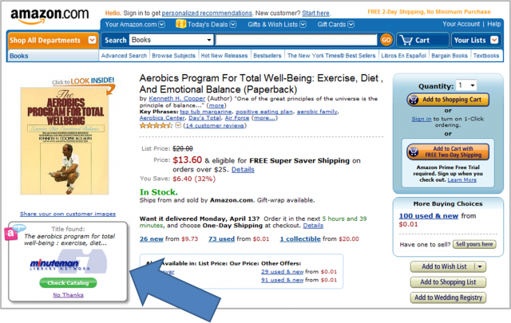

Minuteman Library Network I-Card
Minuteman Library Network Offers First-in-the-Nation Library Information Card
Minuteman Library Network is a consortium of 41 public and academic libraries in 64 locations in the “Boston Metrowest” area of Massachusetts. MLN is a nonprofit 501C corporation, that offers centralized database services to automate and enable sharing of resources across member libraries. The MLN I-Card, currently in Alpha testing, and expected to roll out to the first member library later in April, offers users two benefits:
- One-click login to their libraries on-line resources, including the online catalog as well as database subscriptions,
- An ISBN lookup/reminder service that alerts members when a book they are looking at on popular book retails sites is available in the MLN network, Clicking the reminder navigates the user to the MLN online catalog, where they can log-in with one click using the MLN I-Card. From there, they can see the availability of the book. If the book is not available in their home library, but is available elsewhere in the network, they can submit a transfer request so that the book will be waiting for them when they go in to pick it up.
The Minuteman Library Network InformationCard is an industry-standard “m-card” that contains the user’s library card number as the primary claim. Presenting this claim to the library web site authenticates the user as a valid library user, and grants them access to all the library’s on-line resources to which they are entitled. The m-card is issued using Azigo’s CardPress IdP. In addition to the industry-standard m-card claims, the MLN I-Card is also used as the transport and storage mechanism for the user’s identity preferences – in this case, the fact that they are interested in augmenting their book browsing results with alerts that show them when books they are browsing at online retailers are also available in the library network. The web augmentation rules are delivered via the Kynetx Network Services (http://www.kynetx.com/ ) server-side rules engine, which are called from the client computer from the installed Azigo (http://www.azigo.com/ ) software. Azigo is a bundle containing both a Higgins-based identity selector (http://www.eclipse.org/higgins/ ) as well as proprietary extensions for running the Kynetx identity-drive web augmentation rules.
"Member libraries in the Minuteman Network offer online access to thousands of popular magazines, newspapers, scholarly journals and other databases from publishers such as The New York Times, Consumer Reports, and Science News, to name a few." said Susan McAlister, Executive Director at the Minuteman Library Network. "Information Cards are a win-win: they provide our patrons with convenient, one-click information access, while helping us ensure that only current library patrons can access this licensed content."
| Where to get this card: | The Minuteman Library Network (MLN)'s I-Card is available exclusively to patrons of MLN's member libraries. http://www.mln.lib.ma.us/ |
|---|---|
| For more information contact: | Susan R. McAlister, Executive Director, Minuteman Library Network, smcalister at minlib.net |
| |